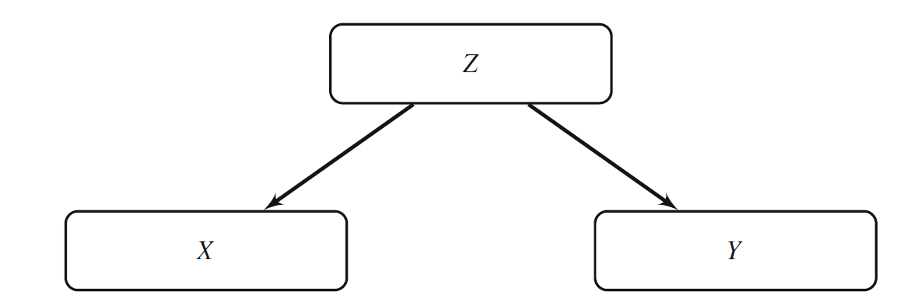
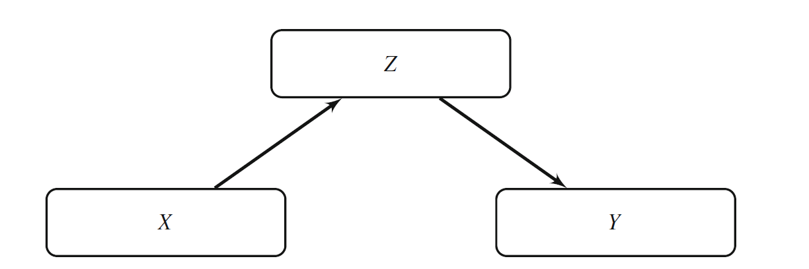
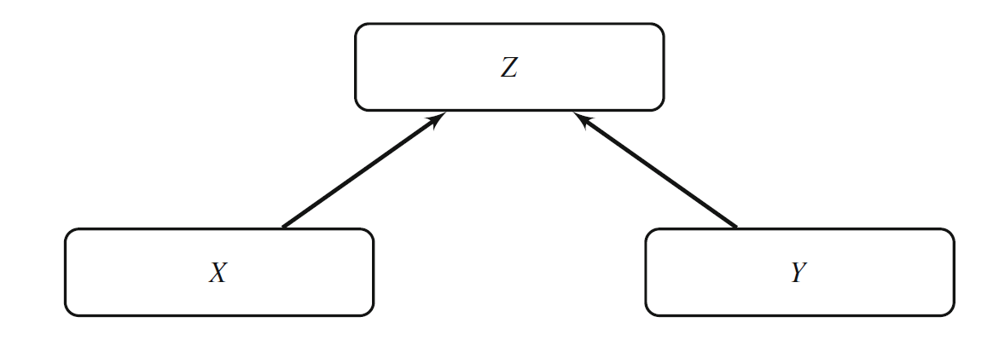
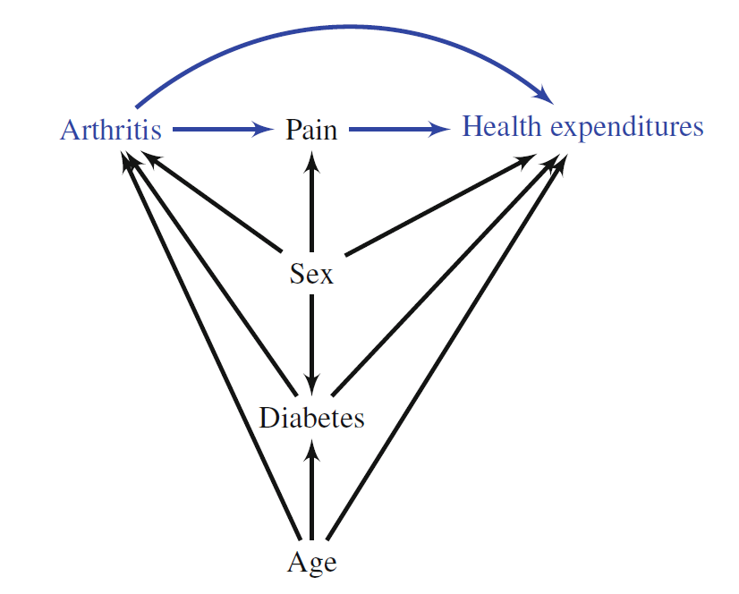
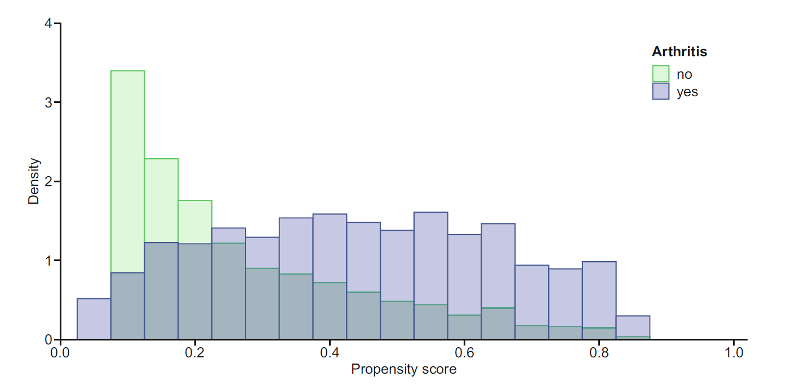
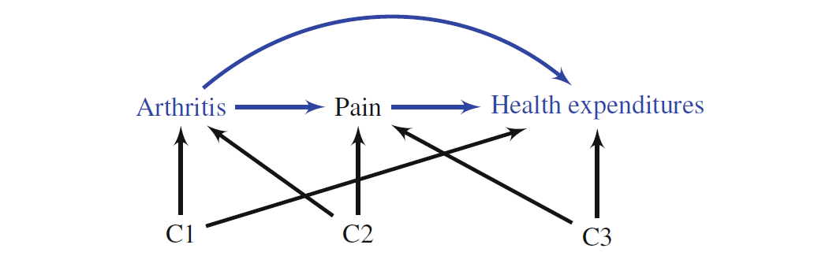

보건의료 연구에서는 단순히 두 변수가 함께 변하는지를 확인하는 것보다, 특정 치료나 노출을 변화시켰을 때 결과가 얼마나 달라지는지를 알고자 하는 경우가 많다. 새로운 약물이 예후를 개선하는가, 금연이 폐암 발생을 줄이는가, 보험제도의 변화가 의료비를 변화시키는가와 같은 질문은 모두 인과질문(causal question)이다.
연관성은 관측자료에서 두 변수 사이의 관계를 기술하지만, 인과성은 원인변수 \(X\)를 변화시켰을 때 결과변수 \(Y\)가 어떻게 달라지는지를 의미한다. 따라서 인과효과는 다음과 같은 반사실적 질문과 연결된다.
동일한 사람이 치료를 받았을 때와 받지 않았을 때의 결과 차이는 무엇인가?
무작위배정 임상시험은 치료군과 대조군이 치료 이외의 요인에서 평균적으로 비교 가능하도록 만들기 때문에 인과효과 추정의 표준적 설계이다. 그러나 비용, 윤리, 시간, 일반화 가능성 등의 이유로 모든 질문을 임상시험으로 해결할 수는 없다. 관찰연구에서는 치료 선택이 환자의 상태나 의료진의 판단에 의해 결정되므로, 단순한 집단 비교가 인과효과를 나타내지 않을 수 있다.
인과질문은 노출변수와 결과변수를 지정하는 것만으로 완성되지 않는다. 최소한 대상집단, 비교할 처치전략, 처치 시작시점, 추적기간, 결과의 측정시점과 효과척도를 명확히 해야 한다. 예를 들어 “운동은 혈압을 낮추는가?”보다 “고혈압 전단계 성인에게 12주 동안 주 3회 유산소운동을 권고하는 전략이 일반적인 생활습관 관리를 유지하는 전략과 비교하여 12주 수축기혈압의 평균을 얼마나 낮추는가?”가 더 명확한 인과질문이다.
이처럼 처치전략, 비교전략, 대상집단, 추적기간과 결과를 구체화하면 관찰연구도 가상의 목표시험(target trial)을 모방하는 형태로 설계할 수 있다. 목표시험의 주요 요소는 적격기준, 처치전략, 배정절차, 추적 시작점, 결과, 인과대조와 분석계획이다. 특히 적격기준을 충족하는 시점, 처치가 결정되는 시점과 추적이 시작되는 시점을 맞추지 않으면 불멸시간 편향이 발생할 수 있다.
통계적 인과추론은 세 단계로 구분할 수 있다. 먼저 관심 있는 반사실적 효과를 정의(definition)하고, 관측자료에서 그 효과를 표현할 수 있는 조건을 밝히는 식별(identification) 단계를 거친 다음, 실제 표본에서 모형이나 알고리즘을 이용해 값을 계산하는 추정(estimation) 단계로 나아간다. 복잡한 분석기법을 사용하더라도 효과가 명확히 정의되지 않았거나 식별가정이 성립하지 않으면 추정값에 인과적 의미를 부여할 수 없다.
8.1.1 평균 인과효과
이분형 원인변수 \(X\in\{0,1\}\)와 결과 \(Y\)를 생각하자. 개인 \(i\)가 \(X=1\)에 노출되었을 때의 잠재결과를 \(Y_i(1)\), \(X=0\)일 때의 잠재결과를 \(Y_i(0)\)이라 하면 개인 인과효과는
Simpson의 역전이 관찰되었다고 해서 항상 교란이 존재하는 것은 아니며, 역전이 없다고 해서 교란이 없는 것도 아니다. 어떤 변수를 층화해야 하는지는 관측된 수치의 변화만으로 결정할 수 없고, 시간순서와 인과구조에 관한 지식이 필요하다. 특히 매개변수나 충돌변수로 층화하면 원하지 않는 효과를 추정하거나 선택편향을 만들 수 있다.
8.3 인과그래프
방향성 비순환 그래프(directed acyclic graph, DAG)는 변수 사이의 가정된 인과관계를 화살표로 표현한다. DAG는 연구자가 가진 생물학적, 임상적, 사회경제적 지식을 분석모형으로 연결하는 도구이다.
DAG의 각 마디는 변수를, 화살표 \(A\rightarrow B\)는 \(A\)가 \(B\)의 직접 원인이라는 가정을 나타낸다. 직접 원인이라는 표현은 그래프에 포함된 다른 변수를 경유하지 않는다는 뜻이며, 효과가 선형이거나 결정적이라는 의미는 아니다. 비순환성은 한 변수에서 출발한 방향성 경로가 다시 같은 변수로 돌아오지 않는다는 뜻이다. 실제 질병과 치료과정에 피드백이 존재하면 동일한 개념을 시간별 변수 \(L_0,L_1,\ldots\)로 나누어 비순환 구조로 표현할 수 있다.
DAG는 자료에서 자동으로 확인되는 사실이 아니라 분석자가 명시한 인과가정의 표현이다. 따라서 화살표가 없는 것도 조건부 독립성에 관한 가정이다. 그래프가 타당하면 d-분리(d-separation) 규칙을 이용하여 어떤 변수를 조건화할 때 경로가 열리거나 닫히는지 판단할 수 있다.
8.3.1 교란변수
교란변수 \(Z\)는 원인 \(X\)와 결과 \(Y\)의 공통 원인이다.

이 구조에서 \(X\)와 \(Y\) 사이의 연관성에는 \(Z\)를 경유하는 비인과경로가 포함된다. \(X\)의 인과효과를 추정하려면 \(Z\)를 조건화하거나 표준화하여 이 경로를 차단해야 한다.
관찰되지 않은 교란이 존재하면 회귀보정, 매칭, 가중치 적용을 사용하더라도 인과추정은 편향될 수 있다. 따라서 DAG 작성 단계에서 가능한 교란요인을 충분히 탐색하는 것이 중요하다.
그림의 \(X\leftarrow Z\rightarrow Y\)는 갈림길(fork) 구조이다. \(Z\)를 조건화하지 않으면 \(X\)와 \(Y\) 사이에 \(Z\)를 통한 열린 뒷문경로가 존재하지만, \(Z\)를 조건화하면 이 경로가 차단된다. 다만 교란변수는 단순히 “처치와 결과 모두와 통계적으로 연관된 변수”로 정의되지 않는다. 표본에서 연관성이 약하더라도 공통 원인이라면 보정집합에 포함될 수 있으며, 반대로 강한 연관성을 보이는 매개변수나 충돌변수는 교란변수가 아니다.
교란변수의 측정오차도 중요하다. 실제 교란요인 \(Z\) 대신 오차가 큰 대리변수 \(Z^\ast\)를 보정하면 잔여교란이 남을 수 있다. 청구자료에서 진단코드의 민감도가 낮거나 건강행태가 조잡하게 범주화된 경우가 대표적이다.
8.3.2 매개변수
매개변수 \(Z\)는 \(X\)가 \(Y\)에 영향을 미치는 인과경로 위에 위치한다.

총효과가 관심이라면 매개변수를 일반적인 교란변수처럼 보정해서는 안 된다. 매개변수를 보정하면 \(X\rightarrow Z\rightarrow Y\) 경로가 차단되어 직접효과에 가까운 양을 추정하게 된다.
그림의 \(X\rightarrow Z\rightarrow Y\)는 사슬(chain) 구조이다. \(Z\)를 조건화하지 않으면 전체 인과경로가 열려 있지만, \(Z\)를 조건화하면 이 경로가 닫힌다. 따라서 총효과 추정에서는 처치 이후에 발생한 매개변수를 일반적인 기저 교란변수처럼 보정하지 않는다.
처치 이후에 측정된 변수가 모두 매개변수인 것은 아니다. 처치 이후 변수는 매개변수, 선택변수, 측정과정의 결과 또는 시간가변 교란변수일 수 있다. 특히 과거 처치의 영향을 받으면서 이후 처치와 결과의 공통 원인이 되는 시간가변 교란변수는 단순 회귀보정으로 처리하기 어렵고, 주변구조모형과 같은 g-방법이 필요할 수 있다.
8.3.3 충돌변수
충돌변수 \(Z\)는 \(X\)와 \(Y\)의 공통 결과이다.

충돌변수를 조건화하면 원래 독립이던 \(X\)와 \(Y\) 사이에 인위적인 연관성이 생길 수 있다. 병원자료만을 이용하는 연구에서 입원 여부가 여러 질환의 공통 결과라면 입원환자로 연구대상을 제한하는 순간 선택편향이 발생할 수 있다. 이를 Berkson 편향의 한 형태로 이해할 수 있다.
그림의 \(X\rightarrow Z\leftarrow Y\)는 충돌구조이다. 충돌변수 \(Z\)를 조건화하지 않으면 \(X\)와 \(Y\) 사이의 경로는 닫혀 있지만, \(Z\) 자체나 \(Z\)의 후손을 조건화하면 경로가 열린다. 조건화는 회귀모형에 변수를 넣는 것뿐 아니라 연구대상 제한, 결측이 없는 대상만 분석, 특정 기관 이용자만 포함, 성향점수 모형에 변수 포함 등을 모두 포괄한다.
예를 들어 치료 부작용과 질병 중증도가 모두 중도탈락에 영향을 주는 상황에서 완전 추적된 환자만 분석하면 추적완료 여부가 충돌변수 역할을 하여 치료와 중증도 사이에 인위적 연관성이 생길 수 있다. 따라서 선택과 결측의 발생과정도 DAG에 포함해야 한다.
8.4 인과그래프의 구축
DAG에는 원인, 결과, 원인과 결과의 공통 원인, 매개요인, 선택과 측정에 관련된 변수를 포함한다. 화살표는 통계적 상관이 아니라 연구자가 가정하는 인과방향을 나타낸다.
관절염이 의료비에 미치는 영향을 예로 들면, 통증은 관절염 효과의 매개변수이고, 나이, 성별, 당뇨병은 관절염과 의료비 모두에 영향을 줄 수 있는 교란요인이다.

DAG는 연구질문에 종속적이다. 동일한 변수 집합을 사용하더라도 관절염의 효과를 묻는 연구와 당뇨병의 효과를 묻는 연구에서는 필요한 보정집합이 달라질 수 있다.
그림에서 관절염에서 통증을 거쳐 의료비로 이어지는 화살표는 간접 인과경로를, 나이·성별·당뇨병에서 관절염과 의료비로 이어지는 화살표는 뒷문경로의 가능성을 나타낸다. 총효과가 목표라면 통증을 보정하지 않고, 관절염과 의료비의 공통 원인을 차단하는 집합을 선택해야 한다.
DAG를 구축할 때는 결과와 통계적으로 유의한 변수만 포함해서는 안 된다. 표본에서 관측된 연관성은 인과방향을 결정하지 못하며, 변수선택을 결과자료에 의존시키면 불안정한 보정집합이 만들어질 수 있다. 임상지식, 기존 연구, 측정시점과 자료수집 과정을 바탕으로 분석 전에 그래프를 작성하는 것이 바람직하다.
하나의 DAG에는 여러 충분 보정집합이 존재할 수 있다. 최소 충분 보정집합(minimal sufficient adjustment set)은 모든 뒷문경로를 차단하면서 어느 한 변수라도 제거하면 더 이상 충분하지 않은 집합이다. 여러 최소집합 중에서는 측정오차가 작고 결측이 적은 변수를 포함한 집합이 통계적 효율성 측면에서 유리할 수 있다. 반면 처치의 강한 예측변수이지만 결과와 거의 관련이 없는 도구변수를 가중치 모형에 추가하면 가중치 변동만 증가시킬 수 있다.
8.4.1 경로와 차단
DAG에서 화살표로 연결된 변수열을 경로(path)라고 한다. \(X\)에서 \(Y\)로 화살표가 한 방향으로 이어지는 경로는 인과경로이다. 반대로 \(X\)와 \(Y\) 사이의 비인과적 연관성을 전달하는 경로는 뒷문경로(backdoor path)이다.
적절한 공변량 집합 \(C\)가 모든 뒷문경로를 차단하면서 인과경로를 차단하지 않으면, 조건부 교환가능성 아래에서
\[
E\{Y(x)\}
=
\sum_c E(Y\mid X=x,C=c)P(C=c)
\]
로 평균 잠재결과를 식별할 수 있다. 연속형 \(C\)에서는 합 대신 적분을 사용한다.
이 식은 g-공식(g-formula) 또는 표준화 공식이다. 유도에는 일관성과 조건부 교환가능성이 사용된다.
이 식에서 \(P(C=c)\)는 목표집단의 분포이다. 동일한 층별 효과를 사용하더라도 연구표본, 처치군, 비처치군 또는 외부 표준인구 중 어느 분포를 가중치로 사용하는지에 따라 추정대상 효과가 달라진다. 직접표준화는 목표집단의 분포를 명시적으로 사용하며, 각 층에서 두 처치군의 자료가 존재해야 한다.
효과수정이 없어서 \(\Delta(c)=\Delta\)가 모든 층에서 같다면 어떤 공통 가중치를 사용해도 같은 위험차이를 얻는다. 효과수정이 존재하면 표준화 효과는 층별 효과의 가중평균이며, 연구결과를 다른 인구집단으로 일반화할 때 목표집단의 공변량 분포가 중요해진다.
범주 수가 많아질수록 층별 표본이 희소해지는 차원의 저주가 발생한다. 회귀표준화, 매칭과 가중치 방법은 고차원 층화를 모형 또는 거리의 문제로 바꾸지만 관측되지 않은 공변량 조합에 대한 외삽 문제를 완전히 제거하지는 않는다.
size treatment success total risk
1 small open 81 87 0.9310345
2 small pcnl 234 270 0.8666667
3 large open 192 263 0.7300380
4 large pcnl 55 80 0.6875000
small large standardized_effect
0.06436782 0.04253802 0.05367122
코드에서 stratum_effect는 각 결석 크기 안에서 개복수술과 경피적 신쇄석술의 성공확률 차이를 계산한다. size_weight는 두 치료군을 합친 전체 대상자의 결석 크기 분포이며, 두 층별 효과에 동일한 가중치를 적용한다. 따라서 standardized_effect는 각 치료군의 실제 결석 크기 구성에 좌우되는 조율되지 않은 전체 비교와 달리 공통 목표분포에서의 평균 위험차이를 나타낸다.
8.5.2 회귀표준화
교란변수가 많거나 연속형이면 각 조합별로 층화하기 어렵다. 이때 결과회귀모형을 적합한 후 모든 대상자에게 \(X=1\)과 \(X=0\)을 각각 부여하여 예측값을 평균한다.
회귀표준화는 결과모형을 이용한 g-계산의 한 형태이다. 각 개인의 실제 처치와 관계없이 동일한 공변량 \(C_i\)를 유지한 채 처치만 1과 0으로 바꾸어 두 개의 반사실적 예측을 만든다. 이때 평균은 모형계수의 처치계수 하나가 아니라 모든 대상자의 예측값 차이를 평균한 주변효과이다.
비선형 모형에서는 결과모형에 상호작용이 없더라도 개인별 예측차이가 공변량에 따라 달라질 수 있다. 예를 들어 로지스틱 회귀에서
이 예제에서는 비용결과가 선형모형으로 생성되었으므로 관절염 계수와 표준화 평균차이가 거의 일치한다. 그러나 비선형 연결함수, 관절염과 공변량의 상호작용 또는 비선형 공변량 효과가 존재하면 회귀계수 하나와 표준화 평균차이는 일반적으로 일치하지 않는다. 실제 분석에서는 d1과 d0에 대한 예측이 관측자료의 지지영역을 벗어나지 않는지도 확인해야 한다.
8.5.3 매칭
매칭은 노출군 각 대상자와 공변량이 유사한 비노출군 대상자를 짝지어 비교 가능한 분석표본을 만든다. 가장 가까운 이웃 매칭, caliper 매칭, 1:\(k\) 매칭 등이 사용된다.
로 계산한다. 일반적으로 절댓값이 0.1보다 작으면 양호한 균형의 경험적 기준으로 사용되지만, 연구맥락에 따라 판단해야 한다.
이분형 공변량의 SMD는 두 집단 비율의 차이를 풀드 이항분산으로 나눈 값으로 정의할 수 있다. 평균뿐 아니라 분산, 분위수와 경험적 누적분포도 비교해야 하며, 여러 공변량의 SMD를 한꺼번에 보여주는 Love plot이 자주 사용된다. 균형평가에는 결과변수를 사용하지 않는 것이 원칙이다.
매칭이 추정하는 효과는 매칭 알고리즘에 의해 결정된다. 처치군마다 비교대조군을 찾는 최근접 이웃 매칭은 보통 ATT에 가까운 효과를 추정한다. 공통지지영역 밖의 대상자를 제외하면 원래 모집단의 ATE가 아니라 매칭 가능한 하위집단의 효과가 된다. 따라서 제외된 대상자의 특성과 최종 추정대상을 보고해야 한다.
caliper가 너무 넓으면 불균형이 남고, 너무 좁으면 많은 처치군 대상자가 제외되어 일반화 가능성이 감소한다. 복원매칭은 좋은 대조군을 여러 번 사용할 수 있어 편향을 줄일 수 있지만 동일 대상자의 반복 사용을 반영한 가중치와 분산추정이 필요하다.
매칭 후 자료는 원래의 독립 표본과 다르다. 짝 또는 매칭집합 내 상관, 대조군의 반복 사용과 성향점수 추정 불확실성을 고려해야 한다. 단순한 독립표본 검정이나 일반 회귀의 표준오차를 그대로 사용하면 불확실성을 잘못 평가할 수 있다.
로 요약할 수 있다. 명목 표본수가 크더라도 소수의 큰 가중치가 지배하면 유효표본크기가 급격히 감소한다. 따라서 가중치 분포, 최대값, 절단 여부, 집단별 가중치 합과 유효표본크기를 함께 보고해야 한다.
8.6 성향점수
성향점수는 관측된 공변량이 주어졌을 때 노출될 조건부 확률이다.
\[
e(C)=P(X=1\mid C)
\]
성향점수는 다차원 공변량을 하나의 균형점수로 요약한다. 같은 성향점수 값을 가진 대상자들에서는 측정된 공변량의 분포가 노출 여부와 독립이 된다.
Rosenbaum–Rubin의 균형성 정리에 따르면
\[
X\perp C\mid e(C).
\]
직관적으로 동일한 성향점수 층에서는 공변량 값이 다르더라도 처치를 받을 조건부 확률이 같으므로 처치 여부가 공변량을 추가로 구분하지 못한다. 조건부 교환가능성까지 성립하면
\[
\{Y(1),Y(0)\}\perp X\mid e(C)
\]
가 되어 고차원 공변량 대신 성향점수로 조건화하여 인과효과를 식별할 수 있다. 그러나 성향점수는 측정되지 않은 교란요인을 균형화하지 않으며, 잘못 측정된 공변량의 정보를 회복하지도 않는다.
성향점수를 이용한 인과추론은 다음 두 조건에 의존한다.
조건부 교환가능성: \(Y(1),Y(0)\perp X\mid C\)
양성성: 모든 \(c\)에 대해 \(0<P(X=1\mid C=c)<1\)

두 집단의 성향점수 범위가 거의 겹치지 않으면 자료가 특정 대상군에 대한 인과효과를 지지하지 못한다. 이 경우 단순히 더 복잡한 모형을 적합하는 것보다 추정대상 모집단을 제한하는 것이 타당할 수 있다.
그림에서 두 분포가 겹치는 구간은 두 처치전략 모두 실제로 관찰된 공변량 조합을 나타낸다. 한 집단에만 밀도가 집중된 꼬리영역에서는 반대 처치의 결과가 거의 관측되지 않아 추정이 모형 외삽에 의존한다. 따라서 성향점수 히스토그램은 단순한 적합도 그림이 아니라 경험적 양성성과 공통지지영역을 평가하는 진단도구이다.
성향점수 모형에는 원칙적으로 처치 이전에 측정된 공통 원인과 결과의 강한 예측변수를 포함한다. 처치 이후 변수, 충돌변수와 그 후손은 포함하지 않아야 한다. 처치의 강한 예측변수만 추가하면 중첩을 악화시킬 수 있으므로 변수선택은 예측력보다 인과구조와 균형을 기준으로 한다.
코드는 비안정화 ATE 가중치를 사용하고 Hájek 형태의 가중평균을 계산한다. 실제 분석에서는 가중 전후의 모든 공변량에 대해 SMD와 분포를 비교하고, 가중치로 인한 이분산성과 성향점수 추정의 영향을 반영하는 강건 샌드위치 분산 또는 부트스트랩을 사용해야 한다. 단순 가중평균의 수치만 제시해서는 인과추정의 타당성을 평가하기 어렵다.
성향점수 분석에서 중요한 것은 성향점수 모형의 예측력이 아니라 공변량 균형이다. AUC가 높은지를 평가하는 것보다 가중 또는 매칭 후 SMD와 분포가 충분히 균형을 이루는지 확인해야 한다.
으로 표현할 수 있다. 여기서 \(\widehat m_x(C)=\widehat E(Y\mid X=x,C)\)이다. 결과모형 또는 성향점수모형 중 하나가 올바르게 지정되면 일관된 추정이 가능하다는 점에서 이중강건성을 갖는다. 그러나 두 모형이 모두 잘못 지정되면 편향이 발생하며, 관찰되지 않은 교란을 해결해 주지는 않는다.
첫 번째 항은 모든 대상자의 결과회귀 예측을 평균한 값이다. 두 번째 항은 실제 처치군에서 관측된 잔차를 역확률 가중하여 결과모형의 오차를 보정한다. 결과모형이 맞으면 조건부 잔차평균이 0이므로 보정항의 기대값이 0이 되고, 성향점수모형이 맞으면 가중 잔차가 결과모형의 오지정을 평균적으로 교정한다.
유연한 머신러닝으로 \(e(C)\)와 \(m_x(C)\)를 추정하면 과적합 때문에 동일 자료에서 계산한 잔차가 지나치게 작아질 수 있다. 표본을 여러 부분으로 나누어 한 부분에서 보조모형을 학습하고 다른 부분에서 영향함수를 계산하는 교차적합(cross-fitting)은 이러한 편향을 줄인다. 다만 이중강건성은 양성성, 일관성, 교환가능성이 이미 성립한다는 전제 아래의 모형 강건성이다.
8.8 매개분석
매개분석은 총효과를 직접효과와 간접효과로 분해한다. 관절염이 통증을 증가시키고 통증이 의료비를 증가시키는 상황을 생각해 보자.
매개분석에서는 처치 \(X\), 매개변수 \(M\)과 결과 \(Y\)의 시간순서가 핵심이다. \(M(x)\)를 처치가 \(x\)일 때의 잠재 매개값, \(Y(x,m)\)을 처치가 \(x\)이고 매개변수를 \(m\)으로 설정했을 때의 잠재결과라고 하자. 전체효과는
가 성립한다. 자연직접효과는 매개변수를 각 개인이 비처치 상태에서 가졌을 값으로 유지한 채 처치만 바꾸는 반사실적 비교이다. 이 정의에는 동시에 관측할 수 없는 교차세계 잠재결과가 포함되므로 일반적인 총효과보다 강한 식별가정이 필요하다.
통제직접효과(controlled direct effect)
\[
E\{Y(1,m)-Y(0,m)\}
\]
는 매개변수를 모든 사람에게 동일한 값 \(m\)으로 고정했을 때의 처치효과이다. 자연직접효과와 질문이 다르며 실제로 매개변수를 개입으로 설정할 수 있는지에 따라 정책적 의미도 달라진다.

그림의 \(X\rightarrow M\rightarrow Y\)는 간접경로, \(X\rightarrow Y\)는 직접경로이다. \(C\)는 처치-결과, 처치-매개, 매개-결과 관계의 처치 이전 공통 원인을 충분히 포함해야 한다. 특히 매개변수와 결과의 공통 원인이 처치의 영향을 받는다면 자연직접·간접효과는 전통적 회귀모형만으로 일반적으로 식별되지 않는다.
이므로 \(X\)의 총계수는 \(c'+ab\)가 된다. 따라서 \(c=c'+ab\) 관계가 얻어진다. 이 등식은 동일한 공변량 집합, 선형성, 가법성, 처치-매개 상호작용 없음과 모형 호환성을 필요로 한다.
로지스틱 회귀, 생존모형 또는 비선형 결과모형에서는 비축약성과 연결함수의 비선형성 때문에 일반적으로 \(ab=c-c'\)가 성립하지 않는다. 또한 처치와 매개변수의 상호작용이 있으면 직접효과와 간접효과가 처치수준과 매개분포에 따라 달라진다. 이 경우 잠재결과 정의에 근거한 매개 g-공식, 가중치 방법 또는 시뮬레이션 기반 표준화를 사용해야 한다.
자료가 선형·가법 구조로 생성되었으므로 indirect_product와 indirect_difference가 비슷하게 나타난다. 이는 일반적인 진단규칙이 아니라 현재 모형가정의 결과이다. 간접효과의 표준오차는 \(a\)와 \(b\)의 불확실성과 공분산을 함께 반영해야 하며 분포가 비대칭일 수 있으므로 비모수 부트스트랩 신뢰구간이 자주 사용된다.
매개과정은 시간적 순서를 전제로 한다. 원인, 매개변수, 결과가 동시에 측정된 단면자료에서는 인과적 매개해석이 특히 취약하다. 또한 원인이 매개변수-결과 교란변수에 영향을 주는 노출유발 교란이 있으면 전통적 회귀분해는 타당하지 않다.
8.9 잠재결과 관점의 핵심 가정
관찰자료에서 평균 인과효과를 식별하려면 다음 가정들이 중요하다.
이 가정들은 자료에서 모두 검정할 수 있는 통계적 조건이 아니다. 일부는 중첩도와 균형처럼 경험적으로 진단할 수 있지만, 교환가능성과 처치버전의 일관성은 연구설계와 전문지식에 근거해 정당화해야 한다. 또한 식별가정과 별도로 표본추출, 측정오차, 결측과 통계모형에 관한 가정이 필요하다.
8.9.1 일관성
실제로 \(X=x\)인 개인의 관측결과는 그 개인의 잠재결과 \(Y(x)\)와 같아야 한다.
\[
X_i=x\quad\Rightarrow\quad Y_i=Y_i(x)
\]
치료가 여러 형태로 구현될 수 있다면 처치의 정의를 명확히 해야 한다.
예를 들어 “항고혈압제 복용”에는 약제 종류, 용량, 순응도와 병용치료가 서로 다른 여러 버전이 포함될 수 있다. 이러한 버전이 결과에 다른 영향을 주는데 모두 같은 \(X=1\)로 묶으면 \(Y(1)\)의 의미가 불명확해진다. 처치전략을 시작, 지속, 중단과 구제치료까지 포함하여 구체적으로 정의해야 일관성 가정을 평가할 수 있다.
일관성은 관측된 처치기록이 실제 개입을 정확하게 반영한다는 측정가정도 포함한다. 처치 오분류가 존재하면 관측된 \(X\)와 잠재결과의 연결이 약화된다.
8.9.2 조건부 교환가능성
측정된 공변량 \(C\)를 조건화했을 때 치료배정이 잠재결과와 독립이어야 한다.
\[
Y(1),Y(0)\perp X\mid C
\]
이는 모든 공통 원인이 측정되고 적절히 보정되었다는 강한 가정이다.
무작위배정에서는 배정기전에 의해 주변 교환가능성
\[
\{Y(1),Y(0)\}\perp X
\]
이 기대된다. 관찰연구에서는 기저 공변량을 조건으로 한 교환가능성을 가정한다. 이 가정은 공변량의 수가 많다는 사실만으로 보장되지 않는다. 중요한 공통 원인의 누락, 측정오차, 잘못된 함수형태와 시간가변 교란의 부적절한 처리 모두 잔여교란을 남길 수 있다.
교환가능성은 분석집단 안에서뿐 아니라 선택과 추적과정에서도 필요하다. 중도탈락 \(R\)이 잠재결과와 관련되면 완전사례 자료에서 교환가능성이 성립하지 않을 수 있으며, 이 경우 검열가중치나 결측자료 방법이 추가로 필요하다.
8.9.3 양성성
각 공변량 조합에서 두 치료를 받을 가능성이 모두 존재해야 한다.
\[
0<P(X=1\mid C=c)<1
\]
특정 환자군에서는 한 치료만 가능하다면 그 환자군에서 비교 인과효과를 자료로부터 추정할 수 없다.
구조적 양성성 위반은 임상금기나 제도적 규칙 때문에 특정 공변량 조합에서 한 처치가 불가능한 경우이다. 이는 표본크기를 늘리거나 모형을 복잡하게 해도 해결되지 않으므로 목표집단이나 비교전략을 재정의해야 한다.
실용적 양성성 위반은 이론적으로 두 처치가 가능하지만 표본에서 한 처치가 매우 드문 경우이다. 극단 가중치, 넓은 신뢰구간과 높은 모형 의존성으로 나타난다. 성향점수 중첩도, 공변량별 교차표와 유효표본크기를 통해 진단할 수 있다.
8.9.4 간섭 없음
한 개인의 처치가 다른 개인의 결과에 영향을 주지 않는다고 가정한다. 감염병, 백신, 사회적 네트워크, 병원 수준 중재에서는 이 가정이 위배될 수 있다.
간섭이 존재하면 개인 \(i\)의 잠재결과는 자신의 처치 \(X_i\)만이 아니라 다른 사람들의 처치벡터 \(\mathbf X_{-i}\)에도 의존하여 \(Y_i(X_i,\mathbf X_{-i})\)로 표현해야 한다. 백신접종은 개인의 감염위험뿐 아니라 전파를 줄여 주변 사람의 결과에도 영향을 줄 수 있다. 이 경우 직접효과, 간접효과, 전체효과와 집단수준 정책효과를 구분해야 한다.
간섭이 병원, 가구 또는 지역 안에서만 존재한다고 가정하는 부분간섭 모형을 사용할 수 있다. 군집무작위시험이나 집단수준 처치비율을 이용한 분석은 이러한 구조를 명시적으로 반영한다.
8.9.5 식별과 추정의 추가 조건
위의 핵심 가정이 성립하더라도 실제 분석에는 추가 조건이 필요하다. 결과, 처치와 공변량이 충분히 정확하게 측정되어야 하며, 연구참여와 추적완료에 따른 선택편향이 적절히 처리되어야 한다. 또한 사용한 결과모형이나 처치모형이 요구하는 함수형태가 적절하거나, 유연한 추정량이 충분한 표본에서 안정적으로 작동해야 한다.
인과효과의 내적 타당도는 연구표본 안에서 효과가 편향 없이 추정되는지를 의미한다. 외적 타당도 또는 이동가능성(transportability)은 그 효과를 다른 환자집단, 의료체계 또는 시기로 옮길 수 있는지를 다룬다. 목표집단의 공변량 분포가 연구표본과 다르면 다음과 같은 외부 표준화가 필요할 수 있다.
로 정의된다. 이는 측정된 공변량을 조건으로 했을 때 관측된 효과를 완전히 설명하려면 미측정 교란이 처치와 결과 각각에 위험비 척도에서 최소 어느 정도 강하게 관련되어야 하는지를 요약한다. E-value는 교란의 존재확률이나 결과의 진실성을 나타내지 않으며 선택편향, 측정오차와 모형오지정을 평가하지도 않는다.
음성대조 결과는 처치의 영향을 받지 않아야 하지만 유사한 교란구조를 공유하는 결과이고, 음성대조 노출은 결과에 영향을 주지 않아야 하지만 유사한 선택·측정 과정을 공유하는 노출이다. 예상하지 않은 연관성이 발견되면 잔여교란이나 체계적 오류의 신호가 될 수 있다. 다만 음성대조가 완전한 진단검정은 아니다.
분석의 타당성을 위해 다음 사항을 함께 검토한다.
인과질문, 비교전략, 시간원점, 추적기간과 추정대상 효과를 먼저 명시한다.
DAG와 시간순서를 이용해 보정할 변수, 매개변수와 충돌변수를 구분한다.
성향점수 모형의 판별력보다 매칭·가중 후 공변량 균형과 중첩을 평가한다.
극단 가중치, 유효표본크기, 표본 제외와 모형 외삽 여부를 확인한다.
결과모형과 처치모형의 함수형태, 상호작용과 비선형성을 점검한다.
미측정 교란, 선택편향과 측정오차에 대한 정량적 민감도 분석을 수행한다.
효과추정값과 함께 목표집단, 효과척도, 식별가정과 분석선택을 명시한다.
인과추론은 특정 통계모형 하나를 선택하는 문제가 아니라, 연구질문, 시간적 구조, 자료생성 과정, 설계, 식별가정, 추정방법과 해석을 일관되게 연결하는 과정이다. 복잡한 방법보다 비교 가능한 대상자를 어떻게 구성했고 어떤 반사실적 비교를 목표로 했는지를 투명하게 설명하는 것이 우선한다.